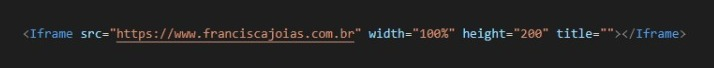

Um Iframe nada mais é que uma página dentro de outra página, podemos colocar vídeos, sites, páginas do mesmo documento... Para adcionarmos vídeos do you tube a nossa página, basta ir em compartilhar, incorporar e copiar o código que o you tube já fornece e colocar no projeto.
A tag "iframe" - Define um iframe;
A tag "src" - Define o caminho do iframe;
A tag "title" - Define o titulo do iframe;
A tag "widht" - Define a largura do iframe;
A tag "height" - Define a altura do iframe;
Abaixo alguns exemplos de Iframe, nessa ordem, site externo, video do youtube e página interna do projeto.
